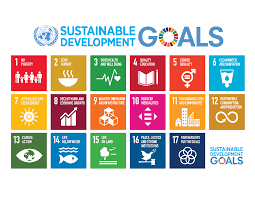
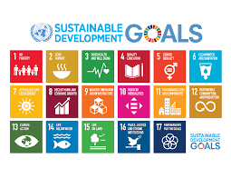
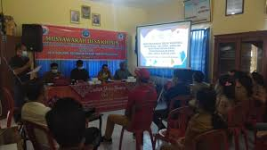
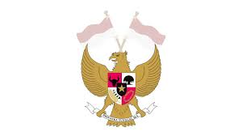
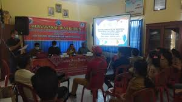
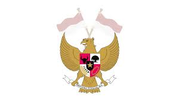

SDGS Di Indonesia
1. SDGS (Sustainable Development Goals) atau disebut juga Sustainable Development Goals (SDGs) : merupakan 17 tujuan global yang dibuat untuk mengatasi berbagai masalah yang sedang kita hadapi. SDGSnya sendiri juga memiliki tujuan, yaitu agar dapat menciptakan kehidupan yang lebih baik dan berkelanjutan untuk semua orang. SDGS ini merupakan agenda 2030 yang sudah menjadi kesepakatan bawha dalam rencana pembangunan Jangka Menegah Nasional (RPJMN), yang melalui program seperti belajar 12 tahun, bantuan sosial, dan rehabilitasi lingkungan. SDGS menjadi peta jalan global untuk menciptakan dunia yang lebih baik, adil, dan berkelanjutan baik di generasi sekarang maupun generasi masa depan. Program SDGS juga merupakan program yang bersifat universal, terintegrasi, dan berbasis data. Hal ini berlaku untuk semua negara tanpa kecuali, tujuannya agar memastikan bahwa tidak ada satupun yang tertinggal. SDGS ini terdiri dari 17 tujuan dan 169 target yang merupakan kelanjutan dari Millenium Development Goals MDGS yang berakhir pada tahun 2015 lalu.
2. SDGS 4: Bertujuan untuk memastikan semua orang bisa mendapatkan pendidikan yang adil, berkualitas, dan terbuka. Hal ini dapat mencakup pendidikan dasar dan menengah yang gratis untuk semua anak, tanpa memandang latar belakang. Selain itu, setiap orang juga harus punya kesempatan yang sama untuk melanjutkan ke jenjang pendidikan tinggi, seperti universitas. SDG 4 juga ingin meningkatkan kualitas guru, metode belajar, dan fasilitas sekolah agar pendidikan menjadi lebih baik. Tujuan lainnya adalah menghapus perbedaan perlakuan antara laki-laki dan perempuan di dunia pendidikan. Semua ini dilakukan agar setiap orang memiliki kesempatan belajar sepanjang hidup mereka.
3. Peran Indonesia dalam Kerja Sama Internasional: Dalam mendukung SDGS 4, Indonesia juga aktif berperan dalam kerja sama internasional untuk meningkatkan kualitas pendidikan. Salah satu contohnya adalah melalui ASEAN Education Cooperation, di mana Indonesia ikut serta dalam program pertukaran pelajar dan guru antarnegara ASEAN. Program ini bertujuan untuk memperluas wawasan dan meningkatkan kualitas pembelajaran. Selain itu, Indonesia juga bergabung dengan organisasi internasional seperti UNICEF dan UNESCO. Kerja sama ini hanya fokus pada peningkatan akses dan mutu pendidikan di wilayah 3T (Tertinggal, Terluar, dan Terdepan). Contohnya, UNICEF membantu Indonesia dalam menyediakan fasilitas pendidikan dasar di daerah terpencil, sementara UNESCO mendukung pelatihan guru untuk memastikan metode pengajaran yang akan diberi lebih baik. Selain itu, kerja sama internasional juga membantu Indonesia dalam pengenalan teknologi pendidikan di sekolah-sekolah. Program digitalisasi ini, dengan bantuan mitra global, membuat siswa juga bisa merasakan manfaat dari teknologi modern untuk belajar. Indonesia juga berbagi pengalaman dengan negara lain tentang pendidikan inklusif, agar anak-anak penyandang disabilitas mendapatkan hak yang sama untuk belajar. Di tingkat global, Indonesia aktif dalam forum seperti G20 Education Working Group untuk ikut menyuarakan pentingnya pendidikan bagi semua. Melalui semua kerja sama ini, Indonesia menunjukkan bahwa pendidikan adalah prioritas besar, baik di dalam negeri maupun di dunia internasional. Tujuan akhirnya adalah memastikan bahwa semua anak punya kesempatan yang sama untuk mendapatkan pendidikan yang layak dan mendukung masa depan mereka.
4. Dampak Positif Bagi Masyarakat Indonesia: Dengan adanya peningkatan kualitas pendidikan, angka buta huruf di daerah pedesaan semakin berkurang. Banyak orang yang sebelumnya kesulitan membaca dan menulis kini dapat mengakses informasi yang bermanfaat dan meningkatkan keterampilan mereka. Program seperti Wajib Belajar 12 Tahun dan Kartu Indonesia Pintar (KIP) juga memberikan kesempatan lebih banyak bagi anak-anak dari keluarga kurang mampu, terutama di daerah terpencil, untuk mendapatkan pendidikan. Hal ini membuat akses pendidikan menjadi lebih setara. Pendidikan juga membuka peluang kerja yang lebih baik, membantu masyarakat keluar dari kemiskinan, dan meningkatkan taraf hidup mereka. Anak-anak muda yang mendapatkan pendidikan lebih baik menjadi lebih kreatif dan siap menghadapi tantangan dunia kerja. Selain itu, pendidikan tinggi di Indonesia juga mendukung munculnya riset dan inovasi yang mendukung pembangunan berkelanjutan. Tak kalah penting, pendidikan mengajarkan pentingnya toleransi dan saling menghargai, yang membuat masyarakat menjadi lebih harmonis. Semua dampak ini membantu Indonesia bergerak menuju masa depan yang lebih baik.
5. Nilai Pancasila yang Diterapkan:Sila ke–1 Di sekolah, siswa diajarkan untuk menghormati agama dan kepercayaan orang lain. Ini membantu mereka memahami pentingnya menghargai perbedaan, terutama di Indonesia yang punya banyak agama dan kepercayaan. Siswa juga diajarkan tentang toleransi dan cara hidup rukun meskipun memiliki keyakinan yang berbeda. Kegiatan seperti pelajaran agama, perayaan hari besar keagamaan, dan kegiatan sosial bersama membantu siswa belajar bahwa keberagaman adalah sesuatu yang baik. Pendidikan ini membuat siswa tumbuh menjadi orang yang religius, saling menghormati, dan mampu menciptakan kerukunan di masyarakat. Sila ke-2 Penerapan pendidikan inklusif yang memastikan semua anak memiliki hak yang sama untuk belajar, tanpa memandang latar belakang mereka. Anak-anak dari keluarga miskin, yang biasanya sulit bersekolah karena masalah biaya, dibantu dengan program seperti Kartu Indonesia Pintar (KIP) dan pendidikan gratis. Program ini membuat mereka tetap bisa mendapatkan pendidikan dan punya peluang untuk masa depan yang lebih baik. Guru-guru pun dilatih agar lebih paham bagaimana membantu siswa dengan kebutuhan khusus. Dengan pendidikan inklusif, semua anak dianggap punya potensi yang sama untuk berkembang. Hal ini menunjukkan bahwa pendidikan di Indonesia bertujuan untuk menciptakan keadilan dan memberikan kesempatan yang sama bagi semua anak. Sila ke-3 Kegiatan seperti upacara bendera, pelaj aran sejarah perjuangan bangsa, dan perayaan hari-hari besar nasional menjadi cara untuk menumbuhkan rasa bangga terhadap Indonesia. Selain itu, siswa juga diajak untuk bekerja sama dalam kelompok, sehingga mereka belajar pentingnya kebersamaan dan gotong royong. Pendidikan juga mendorong siswa untuk tidak hanya mencintai sesama warga negara, tetapi juga menjaga hubungan yang baik dengan komunitas internasional, sambil tetap berpegang pada nilai-nilai kebangsaan. Dengan begitu, generasi muda tidak hanya menjadi individu yang toleran dan cinta Tanah Air, tetapi juga mampu menjaga persatuan di tengah keberagaman bangsa. Hal ini penting untuk memperkuat rasa kebangsaan dan menjaga keutuhan negara Indonesia. Sila ke-4 Masyarakat harus ikut terlibat dalam sistem pendidikan. Salah satu contoh konkretnya adalah lewat komite sekolah, yang berisi orang tua, guru, dan warga sekitar. Komite ini membantu memberikan saran, mengawasi, dan mendukung program-program sekolah agar sesuai dengan kebutuhan siswa. Selain itu, sering diadakan musyawarah untuk membahas dan merencanakan kebijakan pendidikan, baik di tingkat sekolah maupun daerah. Dengan melibatkan masyarakat, pendidikan menjadi lebih baik karena semua pihak bekerja sama dan memikirkan keputusan yang bijaksana demi kebaikan siswa. Sila ke-5 Dalam upaya pemerintah memastikan semua anak, tanpa memandang latar belakang, bisa mendapatkan pendidikan. Contohnya adalah program pendidikan gratis hingga SMA, Kartu Indonesia Pintar (KIP), dan pembangunan sekolah di daerah terpencil. Pemerintah juga memperbaiki fasilitas sekolah di wilayah 3T (Tertinggal, Terdepan, dan Terluar) agar anak-anak di sana bisa belajar seperti anak-anak di kota. Selain itu, pemerintah menyediakan beasiswa untuk siswa yang pintar tetapi kurang mampu secara finansial. Dengan ini, mereka tetap bisa melanjutkan pendidikan hingga ke jenjang yang lebih tinggi. Semua langkah ini menunjukkan bahwa pemerintah ingin semua anak Indonesia punya kesempatan yang sama untuk belajar dan meraih masa depan yang lebih baik.
 

 


